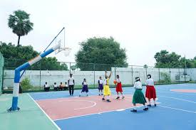
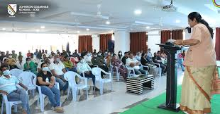

Campus Life

basketball court
It is an outdoor basketball court beside the school's main building.

computer lab
has almost 40 computers along with a projector screen.

auditorium
can hold upto 500 people (students/adults).